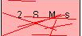

<!DOCTYPE html>
<html lang="zh-Hans">
<head><meta name="generator" content="Hexo 3.9.0">

    <!--[if lt IE 9]>
        <style>body {display: none; background: none !important} </style>
        <meta http-equiv="Refresh" Content="0; url=//outdatedbrowser.com/" />
    <![endif]-->

<meta charset="utf-8">
<meta http-equiv="X-UA-Compatible" content="IE=edge, chrome=1">
<meta name="viewport" content="width=device-width, initial-scale=1, maximum-scale=1, user-scalable=no">
<meta name="format-detection" content="telephone=no">
<meta name="author" content="孔伟">


    
    


<meta name="description" content="java学习">
<meta property="og:type" content="website">
<meta property="og:title" content="Bigeggroll">
<meta property="og:url" content="http://www.bigeggroll.work/index.html">
<meta property="og:site_name" content="Bigeggroll">
<meta property="og:description" content="java学习">
<meta property="og:locale" content="zh-Hans">
<meta name="twitter:card" content="summary">
<meta name="twitter:title" content="Bigeggroll">
<meta name="twitter:description" content="java学习">

<link rel="apple-touch-icon" href="/apple-touch-icon.png">


    <link rel="alternate" href="/atom.xml" title="Bigeggroll" type="application/atom+xml">


    <link rel="shortcut icon" href="/favicon.png">


    <link href="//cdn.bootcss.com/animate.css/3.5.1/animate.min.css" rel="stylesheet">


    <link href="//cdn.bootcss.com/fancybox/2.1.5/jquery.fancybox.min.css" rel="stylesheet">


    <script src="//cdn.bootcss.com/pace/1.0.2/pace.min.js"></script>
    <link href="//cdn.bootcss.com/pace/1.0.2/themes/blue/pace-theme-minimal.css" rel="stylesheet">


<link rel="stylesheet" href="/css/style.css">


    <style> .article { opacity: 0;} </style>


<link href="//cdn.bootcss.com/font-awesome/4.6.3/css/font-awesome.min.css" rel="stylesheet">


<title>Bigeggroll</title>

<script src="//cdn.bootcss.com/jquery/2.2.4/jquery.min.js"></script>
<script src="//cdn.bootcss.com/clipboard.js/1.5.10/clipboard.min.js"></script>

<script>
    var yiliaConfig = {
        fancybox: true,
        animate: true,
        isHome: true,
        isPost: false,
        isArchive: false,
        isTag: false,
        isCategory: false,
        fancybox_js: "//cdn.bootcss.com/fancybox/2.1.5/jquery.fancybox.min.js",
        scrollreveal: "//cdn.bootcss.com/scrollReveal.js/3.1.4/scrollreveal.min.js",
        search: 
    }
</script>


    <script> yiliaConfig.jquery_ui = [false]; </script>


    <script> yiliaConfig.rootUrl = "\/";</script>


</head></html>
<body>
  <div id="container">
    <div class="left-col">
    <div class="overlay"></div>
<div class="intrude-less">
    <header id="header" class="inner">
        <a href="/" class="profilepic">
            
        </a>
        <hgroup>
          <h1 class="header-author"><a href="/">孔伟</a></h1>
        </hgroup>

        

        


        
            <div id="switch-btn" class="switch-btn">
                <div class="icon">
                    <div class="icon-ctn">
                        <div class="icon-wrap icon-house" data-idx="0">
                            <div class="birdhouse"></div>
                            <div class="birdhouse_holes"></div>
                        </div>
                        <div class="icon-wrap icon-ribbon hide" data-idx="1">
                            <div class="ribbon"></div>
                        </div>
                        
                        <div class="icon-wrap icon-link hide" data-idx="2">
                            <div class="loopback_l"></div>
                            <div class="loopback_r"></div>
                        </div>
                        
                        
                        <div class="icon-wrap icon-me hide" data-idx="3">
                            <div class="user"></div>
                            <div class="shoulder"></div>
                        </div>
                        
                    </div>
                    
                </div>
                <div class="tips-box hide">
                    <div class="tips-arrow"></div>
                    <ul class="tips-inner">
                        <li>菜单</li>
                        <li>标签</li>
                        
                        <li>友情链接</li>
                        
                        
                        <li>关于我</li>
                        
                    </ul>
                </div>
            </div>
        

        <div id="switch-area" class="switch-area">
            <div class="switch-wrap">
                <section class="switch-part switch-part1">
                    <nav class="header-menu">
                        <ul>
                        
                            <li><a href="/">主页</a></li>
                        
                            <li><a href="/archives/">所有文章</a></li>
                        
                            <li><a href="/tags/">标签云</a></li>
                        
                            <li><a href="/about/">关于我</a></li>
                        
                        </ul>
                    </nav>
                    <nav class="header-nav">
                        <ul class="social">
                            
                                <a class="fa Email" href="mailto:123@123.com" title="Email"></a>
                            
                                <a class="fa GitHub" href="#" title="GitHub"></a>
                            
                                <a class="fa RSS" href="/atom.xml" title="RSS"></a>
                            
                        </ul>
                    </nav>
                </section>
                
                
                <section class="switch-part switch-part2">
                    <div class="widget tagcloud" id="js-tagcloud">
                        
                    </div>
                </section>
                
                
                
                <section class="switch-part switch-part3">
                    <div id="js-friends">
                    
                      <a class="main-nav-link switch-friends-link" href="https://hexo.io">Hexo</a>
                    
                      <a class="main-nav-link switch-friends-link" href="https://pages.github.com/">GitHub</a>
                    
                      <a class="main-nav-link switch-friends-link" href="http://moxfive.xyz/">MOxFIVE</a>
                    
                    </div>
                </section>
                

                
                
                <section class="switch-part switch-part4">
                
                    <div id="js-aboutme">专注于前端</div>
                </section>
                
            </div>
        </div>
    </header>                
</div>
    </div>
    <div class="mid-col">
      <nav id="mobile-nav">
      <div class="overlay">
          <div class="slider-trigger"></div>
          <h1 class="header-author js-mobile-header hide"><a href="/" title="回到主页">孔伟</a></h1>
      </div>
    <div class="intrude-less">
        <header id="header" class="inner">
            <a href="/" class="profilepic">
                
            </a>
            <hgroup>
              <h1 class="header-author"><a href="/" title="回到主页">孔伟</a></h1>
            </hgroup>
            
            <nav class="header-menu">
                <ul>
                
                    <li><a href="/">主页</a></li>
                
                    <li><a href="/archives/">所有文章</a></li>
                
                    <li><a href="/tags/">标签云</a></li>
                
                    <li><a href="/about/">关于我</a></li>
                
                <div class="clearfix"></div>
                </ul>
            </nav>
            <nav class="header-nav">
                        <ul class="social">
                            
                                <a class="fa Email" target="_blank" href="mailto:123@123.com" title="Email"></a>
                            
                                <a class="fa GitHub" target="_blank" href="#" title="GitHub"></a>
                            
                                <a class="fa RSS" target="_blank" href="/atom.xml" title="RSS"></a>
                            
                        </ul>
            </nav>
        </header>                
    </div>
    <link class="menu-list" tags="标签" friends="友情链接" about="关于我"/>
</nav>
      <div class="body-wrap">
  
    <article id="post-JDK1.8后的新特性" class="article article-type-post" itemscope itemprop="blogPost">
  
    <div class="article-meta">
      <a href="/2019/01/23/JDK1.8后的新特性/" class="article-date">
      <time datetime="2019-01-23T13:02:30.000Z" itemprop="datePublished">2019-01-23</time>
</a>


    </div>
  
  <div class="article-inner">
    
      <input type="hidden" class="isFancy" />
    
    
      <header class="article-header">
        
  
    <h1 itemprop="name">
      <a class="article-title" href="/2019/01/23/JDK1.8后的新特性/">JDK1.8后的新特性</a>
    </h1>
  

      </header>
      
    
    <div class="article-entry" itemprop="articleBody">
      
          
        <h2 id="JDK1-8后的新特性"><a href="#JDK1-8后的新特性" class="headerlink" title="JDK1.8后的新特性"></a>JDK1.8后的新特性</h2><blockquote>
<p>在jdk1.8中对hashMap等map集合的数据结构优化。</p>
<p>​    原来的hashMap采用的数据结构是哈希表（数组+链表），hashMap默认大小是16，一个0-15索引的数组，如何往里面存储元素，首先调用元素的hashcode方法，计算出哈希码值，经过哈希算法算成数组的索引值，如果对应的索引处没有元素，直接存放，如果有对象在，那么比较它们的equals方法比较内容 ,如果内容一样，后一个value会将前一个value的值覆盖，如果不一样，在1.7的时候，后加的放在前面，形成一个链表，形成了碰撞，在某些情况下如果链表无限下去，那么效率极低，碰撞是避免不了的 ,加载因子：0.75，数组扩容，达到总容量的75%，就进行扩容，但是无法避免碰撞的情况发生,在1.8之后，在数组+链表+红黑树来实现hashmap，当碰撞的元素个数大于8时 &amp; 总容量大于64，会有红黑树的引入,除了添加之后，效率都比链表高，1.8之后链表新进元素加到末尾,ConcurrentHashMap (锁分段机制)，concurrentLevel,jdk1.8采用CAS算法(无锁算法，不再使用锁分段)，数组+链表中也引入了红黑树的使用</p>
</blockquote>
<p>###Lambda表达式 </p>
<p>先初步的了解一下lambda表达式的应用场景 </p>
<figure class="highlight java"><table><tr><td class="gutter"><pre><span class="line">1</span><br><span class="line">2</span><br><span class="line">3</span><br><span class="line">4</span><br><span class="line">5</span><br><span class="line">6</span><br><span class="line">7</span><br><span class="line">8</span><br><span class="line">9</span><br><span class="line">10</span><br><span class="line">11</span><br><span class="line">12</span><br></pre></td><td class="code"><pre><span class="line"><span class="comment">//使用匿名内部内调用线程</span></span><br><span class="line"><span class="keyword">new</span> Thread(<span class="keyword">new</span> Runnable() &#123;</span><br><span class="line">    <span class="meta">@Override</span></span><br><span class="line">    <span class="function"><span class="keyword">public</span> <span class="keyword">void</span> <span class="title">run</span><span class="params">()</span> </span>&#123;</span><br><span class="line">        System.out.println(<span class="string">"来啦老弟"</span>);</span><br><span class="line">    &#125;</span><br><span class="line">&#125;).start();</span><br><span class="line"></span><br><span class="line"><span class="comment">//使用lambda表达式重写run方法并调用线程</span></span><br><span class="line"><span class="keyword">new</span> Thread(() -&gt; &#123;</span><br><span class="line">    System.out.println(<span class="string">"来啦小老弟"</span>);</span><br><span class="line">&#125;).start();</span><br></pre></td></tr></table></figure>

<p>####匿名内部类简化了实现类和子类的编写，使用Lambda表达式简化了部分匿名内部类的编写。 </p>
<p>Lambda表达式的格式： </p>
<figure class="highlight java"><table><tr><td class="gutter"><pre><span class="line">1</span><br><span class="line">2</span><br><span class="line">3</span><br><span class="line">4</span><br><span class="line">5</span><br><span class="line">6</span><br></pre></td><td class="code"><pre><span class="line">格式 ：(方法的参数列表)-&gt;&#123;方法体&#125;</span><br><span class="line">（形式参数）：如果有多个参数，参数之间用逗号隔开；如果没有参数，留空即可</span><br><span class="line">-&gt; : 由英文中画线和大于符号组成，固定写法。代表指向动作</span><br><span class="line">&#123;代码块&#125; ：是我们具体要做的事情，也就是以前我们写的方法体内容</span><br><span class="line">组成Lambda表达式的三要素：</span><br><span class="line">     形式参数，箭头，代码块</span><br></pre></td></tr></table></figure>

<h5 id="Lambda表达式用于自定义的类的用法"><a href="#Lambda表达式用于自定义的类的用法" class="headerlink" title="Lambda表达式用于自定义的类的用法"></a>Lambda表达式用于自定义的类的用法</h5><ul>
<li>Lambda表达式用于无参数的情况</li>
</ul>
<figure class="highlight java"><table><tr><td class="gutter"><pre><span class="line">1</span><br><span class="line">2</span><br><span class="line">3</span><br><span class="line">4</span><br><span class="line">5</span><br><span class="line">6</span><br><span class="line">7</span><br><span class="line">8</span><br><span class="line">9</span><br><span class="line">10</span><br><span class="line">11</span><br><span class="line">12</span><br><span class="line">13</span><br><span class="line">14</span><br><span class="line">15</span><br><span class="line">16</span><br><span class="line">17</span><br><span class="line">18</span><br><span class="line">19</span><br><span class="line">20</span><br><span class="line">21</span><br></pre></td><td class="code"><pre><span class="line"><span class="keyword">public</span> <span class="class"><span class="keyword">interface</span> <span class="title">EatAble</span> </span>&#123;</span><br><span class="line">    <span class="function"><span class="keyword">void</span> <span class="title">eat</span><span class="params">()</span></span>;</span><br><span class="line">&#125;</span><br><span class="line"><span class="keyword">public</span> <span class="class"><span class="keyword">class</span> <span class="title">LambdaDemo</span> </span>&#123;</span><br><span class="line">    <span class="function"><span class="keyword">public</span> <span class="keyword">static</span> <span class="keyword">void</span> <span class="title">main</span><span class="params">(String[] args)</span> </span>&#123;</span><br><span class="line">    <span class="comment">//使用匿名内部内调用eat方法</span></span><br><span class="line">        eatAble(<span class="keyword">new</span> EatAble() &#123;</span><br><span class="line">            <span class="meta">@Override</span></span><br><span class="line">            <span class="function"><span class="keyword">public</span> <span class="keyword">void</span> <span class="title">eat</span><span class="params">()</span> </span>&#123;</span><br><span class="line">                System.out.println(<span class="string">"吃大苹果"</span>);</span><br><span class="line">            &#125;</span><br><span class="line">        &#125;);</span><br><span class="line">        <span class="comment">//使用lambda表达式重写eat方法并调用</span></span><br><span class="line">        eatAble(() -&gt;&#123;</span><br><span class="line">            System.out.println(<span class="string">"吃苹果"</span>);</span><br><span class="line">        &#125;);</span><br><span class="line">    &#125;</span><br><span class="line">    <span class="function"><span class="keyword">public</span> <span class="keyword">static</span> <span class="keyword">void</span> <span class="title">eatAble</span><span class="params">(EatAble e)</span></span>&#123;</span><br><span class="line">        e.eat();</span><br><span class="line">    &#125;</span><br><span class="line">&#125;</span><br></pre></td></tr></table></figure>

<ul>
<li>Lambda表达式用于有参数的情况</li>
</ul>
<figure class="highlight java"><table><tr><td class="gutter"><pre><span class="line">1</span><br><span class="line">2</span><br><span class="line">3</span><br><span class="line">4</span><br><span class="line">5</span><br><span class="line">6</span><br><span class="line">7</span><br><span class="line">8</span><br><span class="line">9</span><br><span class="line">10</span><br><span class="line">11</span><br><span class="line">12</span><br><span class="line">13</span><br><span class="line">14</span><br><span class="line">15</span><br><span class="line">16</span><br><span class="line">17</span><br><span class="line">18</span><br><span class="line">19</span><br><span class="line">20</span><br></pre></td><td class="code"><pre><span class="line"><span class="keyword">public</span> <span class="class"><span class="keyword">interface</span> <span class="title">Fly</span> </span>&#123;</span><br><span class="line">    <span class="function"><span class="keyword">void</span> <span class="title">fly</span><span class="params">(String s)</span></span>;</span><br><span class="line">&#125;</span><br><span class="line"><span class="comment">//匿名内部内</span></span><br><span class="line">flyAble(<span class="keyword">new</span> Fly() &#123;</span><br><span class="line">    <span class="meta">@Override</span></span><br><span class="line">    <span class="function"><span class="keyword">public</span> <span class="keyword">void</span> <span class="title">fly</span><span class="params">(String s)</span> </span>&#123;</span><br><span class="line">        System.out.println(s);</span><br><span class="line">        System.out.println(<span class="string">"飞机起飞了"</span>);</span><br><span class="line">    &#125;</span><br><span class="line">&#125;);</span><br><span class="line"><span class="comment">//有参的lambda表达式</span></span><br><span class="line">flyAble((String s)-&gt;&#123;</span><br><span class="line">    System.out.println(s);</span><br><span class="line">    System.out.println(<span class="string">"飞机又起飞了"</span>);</span><br><span class="line">&#125;);</span><br><span class="line"></span><br><span class="line"><span class="function"><span class="keyword">public</span> <span class="keyword">static</span> <span class="keyword">void</span> <span class="title">flyAble</span><span class="params">(Fly f)</span></span>&#123;</span><br><span class="line">    f.fly(<span class="string">"开飞机喽"</span>);</span><br><span class="line">&#125;</span><br></pre></td></tr></table></figure>

<ul>
<li>Lambda表达式用于有参数有返回值的情况</li>
</ul>
<figure class="highlight java"><table><tr><td class="gutter"><pre><span class="line">1</span><br><span class="line">2</span><br><span class="line">3</span><br><span class="line">4</span><br><span class="line">5</span><br><span class="line">6</span><br><span class="line">7</span><br><span class="line">8</span><br><span class="line">9</span><br><span class="line">10</span><br><span class="line">11</span><br><span class="line">12</span><br><span class="line">13</span><br><span class="line">14</span><br><span class="line">15</span><br><span class="line">16</span><br><span class="line">17</span><br><span class="line">18</span><br><span class="line">19</span><br></pre></td><td class="code"><pre><span class="line"><span class="keyword">public</span> <span class="class"><span class="keyword">interface</span> <span class="title">AddAble</span> </span>&#123;</span><br><span class="line">    <span class="function"><span class="keyword">int</span> <span class="title">add</span><span class="params">(<span class="keyword">int</span> a,<span class="keyword">int</span> b)</span></span>;</span><br><span class="line">&#125;</span><br><span class="line"></span><br><span class="line">addAble(<span class="keyword">new</span> AddAble() &#123;</span><br><span class="line">    <span class="meta">@Override</span></span><br><span class="line">    <span class="function"><span class="keyword">public</span> <span class="keyword">int</span> <span class="title">add</span><span class="params">(<span class="keyword">int</span> a, <span class="keyword">int</span> b)</span> </span>&#123;</span><br><span class="line">        <span class="keyword">return</span> a+b;</span><br><span class="line">    &#125;</span><br><span class="line">&#125;);</span><br><span class="line"><span class="comment">//lambda有参有返回值类型</span></span><br><span class="line">addAble((<span class="keyword">int</span> a,<span class="keyword">int</span> b) -&gt;&#123;</span><br><span class="line">    <span class="keyword">return</span> a+b;</span><br><span class="line">&#125;);</span><br><span class="line"></span><br><span class="line"><span class="function"><span class="keyword">public</span> <span class="keyword">static</span> <span class="keyword">void</span> <span class="title">addAble</span><span class="params">(AddAble a)</span></span>&#123;</span><br><span class="line">    <span class="keyword">int</span> i = a.add(<span class="number">2</span>, <span class="number">3</span>);</span><br><span class="line">    System.out.println(i);</span><br><span class="line">&#125;</span><br></pre></td></tr></table></figure>

<p>以上是Lambda基础的用法，Lambda还能够更加的简化，可以根据不同的情况进行简化</p>
<h6 id="简化规则："><a href="#简化规则：" class="headerlink" title="简化规则："></a>简化规则：</h6><ol>
<li>参数类型可以省略。但是有多个参数的情况下，不能只省略一个 </li>
<li>如果参数有且仅有一个，那么小括号可以省略 </li>
<li>如果代码块的语句只有一条，可以省略大括号和分号，和return关键字</li>
</ol>
<figure class="highlight java"><table><tr><td class="gutter"><pre><span class="line">1</span><br><span class="line">2</span><br><span class="line">3</span><br><span class="line">4</span><br><span class="line">5</span><br><span class="line">6</span><br><span class="line">7</span><br><span class="line">8</span><br><span class="line">9</span><br><span class="line">10</span><br><span class="line">11</span><br><span class="line">12</span><br><span class="line">13</span><br><span class="line">14</span><br><span class="line">15</span><br><span class="line">16</span><br><span class="line">17</span><br><span class="line">18</span><br><span class="line">19</span><br><span class="line">20</span><br><span class="line">21</span><br><span class="line">22</span><br><span class="line">23</span><br></pre></td><td class="code"><pre><span class="line"><span class="keyword">public</span> <span class="class"><span class="keyword">interface</span> <span class="title">EatAble</span> </span>&#123;</span><br><span class="line">    <span class="function"><span class="keyword">void</span> <span class="title">eat</span><span class="params">()</span></span>;</span><br><span class="line">&#125;</span><br><span class="line"><span class="keyword">public</span> <span class="class"><span class="keyword">interface</span> <span class="title">Fly</span> </span>&#123;</span><br><span class="line">    <span class="function"><span class="keyword">void</span> <span class="title">fly</span><span class="params">(String s)</span></span>;</span><br><span class="line">&#125;</span><br><span class="line"></span><br><span class="line">addAble((<span class="keyword">int</span> a,<span class="keyword">int</span> b) -&gt;&#123;</span><br><span class="line">    <span class="keyword">return</span> a+b;</span><br><span class="line">&#125;);</span><br><span class="line"><span class="comment">//参数的类型可以省略 </span></span><br><span class="line">useAddable((x, y) -&gt; &#123; </span><br><span class="line">    <span class="keyword">return</span> x + y; </span><br><span class="line">&#125;);</span><br><span class="line">useFlyable((String s) -&gt; &#123; System.out.println(s); &#125;);</span><br><span class="line"><span class="comment">//如果参数有且仅有一个，那么小括号可以省略 </span></span><br><span class="line">useFlyable(s -&gt; &#123;  System.out.println(s);  &#125;);</span><br><span class="line"></span><br><span class="line"><span class="comment">//如果代码块的语句只有一条，可以省略大括号和分号 </span></span><br><span class="line">useFlyable(s -&gt; System.out.println(s));</span><br><span class="line"></span><br><span class="line"><span class="comment">//如果代码块的语句只有一条，可以省略大括号和分号，如果有return，return也要省略掉 </span></span><br><span class="line">useAddable((x, y) -&gt; x + y);</span><br></pre></td></tr></table></figure>

<h6 id="Lambda表达式的注意事项"><a href="#Lambda表达式的注意事项" class="headerlink" title="Lambda表达式的注意事项"></a>Lambda表达式的注意事项</h6><p>​    使用Lambda必须要有接口，并且要求接口中有且仅有一个抽象方法 </p>
<p>​    必须有上下文环境，才能推导出Lambda对应的接口 </p>
<ul>
<li><ul>
<li><p>根据局部变量的赋值得知Lambda对应的接口 </p>
</li>
<li><p>Runnable r = () -&gt; System.out.println(“Lambda表达式”); </p>
</li>
</ul>
</li>
<li><ul>
<li><p>根据调用方法的参数得知Lambda对应的接口</p>
</li>
<li><p>new Thread(() -&gt; System.out.println(“Lambda表达式”)).start();</p>
</li>
</ul>
</li>
</ul>
<h6 id="Lambda表达式和匿名内部类的区别"><a href="#Lambda表达式和匿名内部类的区别" class="headerlink" title="Lambda表达式和匿名内部类的区别"></a>Lambda表达式和匿名内部类的区别</h6><ol>
<li><p>所需类型不同 </p>
<p>匿名内部类：可以是接口，也可以是抽象类，还可以是具体类 </p>
<p>Lambda表达式：只能是接口 </p>
</li>
<li><p>使用限制不同 </p>
<p>如果接口中有且仅有一个抽象方法，可以使用Lambda表达式，也可以使用匿名内部类 </p>
<p>如果接口中多于一个抽象方法，只能使用匿名内部类，而不能使用Lambda表达式 </p>
</li>
<li><p>实现原理不同 </p>
<p>匿名内部类：编译之后，产生一个单独的.class字节码文件</p>
<p>Lambda表达式：编译之后，没有一个单独的.class字节码文件。对应的字节码会在运行的时                       候动态生成</p>
</li>
</ol>
<h3 id="接口"><a href="#接口" class="headerlink" title="接口"></a>接口</h3><h5 id="接口组成更新概述"><a href="#接口组成更新概述" class="headerlink" title="接口组成更新概述"></a>接口组成更新概述</h5><pre><code>1. 常量 public static final 
2. 抽象方法 public abstract 
3. 默认方法(Java 8) 
4. 静态方法(Java 8) 
5. 私有方法(Java 9)</code></pre><h6 id="接口中默认方法"><a href="#接口中默认方法" class="headerlink" title="接口中默认方法"></a>接口中默认方法</h6><figure class="highlight java"><table><tr><td class="gutter"><pre><span class="line">1</span><br><span class="line">2</span><br></pre></td><td class="code"><pre><span class="line">格式</span><br><span class="line"> <span class="keyword">public</span> <span class="keyword">default</span> 返回值类型 方法名(参数列表) &#123; &#125;</span><br></pre></td></tr></table></figure>

<p>注意事项 </p>
<ul>
<li>默认方法不是抽象方法，所不以强制被重写。但是可以被重写，重写的时候去掉default关键字 </li>
<li>public可以省略，default不能省略</li>
</ul>
<h6 id="接口中静态方法"><a href="#接口中静态方法" class="headerlink" title="接口中静态方法"></a>接口中静态方法</h6><figure class="highlight java"><table><tr><td class="gutter"><pre><span class="line">1</span><br><span class="line">2</span><br></pre></td><td class="code"><pre><span class="line">格式</span><br><span class="line"><span class="keyword">public</span> <span class="keyword">static</span> 返回值类型 方法名(参数列表) &#123; &#125;</span><br></pre></td></tr></table></figure>

<p>注意事项 </p>
<ul>
<li>静态方法只能通过接口名调用，不能通过实现类名或者对象名调用 </li>
<li>public可以省略，static不能省略</li>
</ul>
<h6 id="接口中私有方法"><a href="#接口中私有方法" class="headerlink" title="接口中私有方法"></a>接口中私有方法</h6><p>私有方法产生原因 </p>
<p>​    Java 9中新增了带方法体的私有方法，这其实在Java 8中就埋下了伏笔：Java 8允许在接口中定义带方法体的 默认方法和静态方法。这样可能就会引发一个问题：当两个默认方法或者静态方法中包含一段相同的代码实 现时，程序必然考虑将这段实现代码抽取成一个共性方法，而这个共性方法是不需要让别人使用的，因此用 私有给隐藏起来，这就是Java 9增加私有方法的必然性</p>
<p>定义格式 </p>
<figure class="highlight java"><table><tr><td class="gutter"><pre><span class="line">1</span><br><span class="line">2</span><br><span class="line">3</span><br><span class="line">4</span><br></pre></td><td class="code"><pre><span class="line">格式<span class="number">1</span></span><br><span class="line"><span class="keyword">private</span> 返回值类型 方法名(参数列表) &#123; &#125; </span><br><span class="line">格式<span class="number">2</span></span><br><span class="line"><span class="keyword">private</span> <span class="keyword">static</span> 返回值类型 方法名(参数列表) &#123; &#125;</span><br></pre></td></tr></table></figure>

<p>注意事项 </p>
<ul>
<li>默认方法可以调用私有的静态方法和非静态方法</li>
<li>静态方法只能调用私有的静态方法</li>
</ul>
<h3 id="方法引用"><a href="#方法引用" class="headerlink" title="方法引用"></a>方法引用</h3><p>方法引用的出现原因</p>
<p>​    在使用Lambda表达式的时候，我们实际上传递进去的代码就是一种解决方案：拿参数做操作 那么考虑一种情况：如果我们在Lambda中所指定的操作方案，已经有地方存在相同方案，那是否还有必要再 写重复逻辑呢？答案肯定是没有必要 那我们又是如何使用已经存在的方案的呢？ 这就是我们要讲解的方法引用，我们是通过方法引用来使用已经存在的方案</p>
<p>代码演示 </p>
<figure class="highlight java"><table><tr><td class="gutter"><pre><span class="line">1</span><br><span class="line">2</span><br><span class="line">3</span><br><span class="line">4</span><br><span class="line">5</span><br><span class="line">6</span><br><span class="line">7</span><br><span class="line">8</span><br><span class="line">9</span><br><span class="line">10</span><br><span class="line">11</span><br><span class="line">12</span><br><span class="line">13</span><br><span class="line">14</span><br><span class="line">15</span><br><span class="line">16</span><br><span class="line">17</span><br><span class="line">18</span><br></pre></td><td class="code"><pre><span class="line"><span class="keyword">public</span> <span class="class"><span class="keyword">interface</span> <span class="title">Printable</span> </span>&#123;</span><br><span class="line">     <span class="function"><span class="keyword">void</span> <span class="title">printString</span><span class="params">(String s)</span></span>;</span><br><span class="line"> &#125; </span><br><span class="line"><span class="keyword">public</span> <span class="class"><span class="keyword">class</span> <span class="title">PrintableDemo</span> </span>&#123; </span><br><span class="line">    <span class="function"><span class="keyword">public</span> <span class="keyword">static</span> <span class="keyword">void</span> <span class="title">main</span><span class="params">(String[] args)</span> </span>&#123;</span><br><span class="line">     <span class="comment">//在主方法中调用usePrintable方法 </span></span><br><span class="line">    <span class="comment">// usePrintable((String s) -&gt; &#123; </span></span><br><span class="line">    <span class="comment">// System.out.println(s);</span></span><br><span class="line">     <span class="comment">// &#125;);</span></span><br><span class="line">     <span class="comment">//Lambda简化写法</span></span><br><span class="line">    usePrintable(s -&gt; System.out.println(s)); </span><br><span class="line">    <span class="comment">//方法引用 </span></span><br><span class="line">    usePrintable(System.out::println); </span><br><span class="line">    &#125;</span><br><span class="line">    <span class="function"><span class="keyword">private</span> <span class="keyword">static</span> <span class="keyword">void</span> <span class="title">usePrintable</span><span class="params">(Printable p)</span> </span>&#123; </span><br><span class="line">        p.printString(<span class="string">"来啦"</span>); </span><br><span class="line">    &#125; </span><br><span class="line">&#125;</span><br></pre></td></tr></table></figure>

<p>方法引用符</p>
<pre><code>:: 该符号为引用运算符，而它所在的表达式被称为方法引用 </code></pre><p>推导与省略 </p>
<ul>
<li>如果使用Lambda，那么根据“可推导就是可省略”的原则，无需指定参数类型，也无需指定的重载    形式， 它们都将被自动推导 </li>
<li>如果使用方法引用，也是同样可以根据上下文进行推导 </li>
<li>方法引用是Lambda的孪生兄弟</li>
</ul>
<p>引用类方法</p>
<p>​    引用类方法，其实就是引用类的静态方法</p>
<p>格式 </p>
<p>​    类名::静态方法 </p>
<p>​    范例 ：Integer::parseInt </p>
<p>​    Integer类的方法：public static int parseInt(String s) 将此String转换为int类型数据 </p>
<figure class="highlight java"><table><tr><td class="gutter"><pre><span class="line">1</span><br><span class="line">2</span><br><span class="line">3</span><br><span class="line">4</span><br><span class="line">5</span><br><span class="line">6</span><br><span class="line">7</span><br><span class="line">8</span><br><span class="line">9</span><br><span class="line">10</span><br><span class="line">11</span><br><span class="line">12</span><br><span class="line">13</span><br><span class="line">14</span><br><span class="line">15</span><br></pre></td><td class="code"><pre><span class="line"><span class="keyword">public</span> <span class="class"><span class="keyword">interface</span> <span class="title">Converter</span> </span>&#123; </span><br><span class="line">    <span class="function"><span class="keyword">int</span> <span class="title">convert</span><span class="params">(String s)</span></span>; </span><br><span class="line">&#125; </span><br><span class="line"><span class="keyword">public</span> <span class="class"><span class="keyword">class</span> <span class="title">ConverterDemo</span> </span>&#123; </span><br><span class="line">    <span class="function"><span class="keyword">public</span> <span class="keyword">static</span> <span class="keyword">void</span> <span class="title">main</span><span class="params">(String[] args)</span> </span>&#123; </span><br><span class="line">        <span class="comment">//Lambda写法 </span></span><br><span class="line">        useConverter(s -&gt; Integer.parseInt(s));</span><br><span class="line">         <span class="comment">//引用类方法 </span></span><br><span class="line">        useConverter(Integer::parseInt); </span><br><span class="line">    &#125; </span><br><span class="line">    <span class="function"><span class="keyword">private</span> <span class="keyword">static</span> <span class="keyword">void</span> <span class="title">useConverter</span><span class="params">(Converter c)</span> </span>&#123; </span><br><span class="line">        <span class="keyword">int</span> number = c.convert(<span class="string">"666"</span>); </span><br><span class="line">        System.out.println(number); </span><br><span class="line">    &#125; </span><br><span class="line">&#125;</span><br></pre></td></tr></table></figure>

<p>使用说明 </p>
<p>Lambda表达式被类方法替代的时候，它的形式参数全部传递给静态方法作为参数</p>
<p>引用对象的实例方法</p>
<p>引用对象的实例方法，其实就引用类中的成员方法 </p>
<p>格式 </p>
<p>​    对象::成员方法 </p>
<p>范例 </p>
<p>​    “HelloWorld”::toUpperCase </p>
<p>​    String类中的方法：public String toUpperCase() 将此String所有字符转换为大写 </p>
<figure class="highlight java"><table><tr><td class="gutter"><pre><span class="line">1</span><br><span class="line">2</span><br><span class="line">3</span><br><span class="line">4</span><br><span class="line">5</span><br><span class="line">6</span><br><span class="line">7</span><br><span class="line">8</span><br><span class="line">9</span><br><span class="line">10</span><br><span class="line">11</span><br><span class="line">12</span><br><span class="line">13</span><br><span class="line">14</span><br><span class="line">15</span><br><span class="line">16</span><br><span class="line">17</span><br><span class="line">18</span><br><span class="line">19</span><br><span class="line">20</span><br><span class="line">21</span><br><span class="line">22</span><br></pre></td><td class="code"><pre><span class="line"><span class="keyword">public</span> <span class="class"><span class="keyword">class</span> <span class="title">PrintString</span> </span>&#123; </span><br><span class="line">    <span class="comment">//把字符串参数变成大写的数据，然后在控制台输出 </span></span><br><span class="line">    <span class="function"><span class="keyword">public</span> <span class="keyword">void</span> <span class="title">printUpper</span><span class="params">(String s)</span> </span>&#123; </span><br><span class="line">    String result = s.toUpperCase(); </span><br><span class="line">    System.out.println(result); </span><br><span class="line">    &#125; </span><br><span class="line">&#125;</span><br><span class="line"><span class="keyword">public</span> <span class="class"><span class="keyword">interface</span> <span class="title">Printer</span> </span>&#123; </span><br><span class="line">    <span class="function"><span class="keyword">void</span> <span class="title">printUpperCase</span><span class="params">(String s)</span></span>; </span><br><span class="line">&#125; </span><br><span class="line"><span class="keyword">public</span> <span class="class"><span class="keyword">class</span> <span class="title">PrinterDemo</span> </span>&#123; </span><br><span class="line">    <span class="function"><span class="keyword">public</span> <span class="keyword">static</span> <span class="keyword">void</span> <span class="title">main</span><span class="params">(String[] args)</span> </span>&#123; </span><br><span class="line">    <span class="comment">//Lambda简化写法 </span></span><br><span class="line">    usePrinter(s -&gt; System.out.println(s.toUpperCase()));</span><br><span class="line">     <span class="comment">//引用对象的实例方法 </span></span><br><span class="line">    PrintString ps = <span class="keyword">new</span> PrintString(); </span><br><span class="line">    usePrinter(ps::printUpper); </span><br><span class="line">    &#125; </span><br><span class="line">    <span class="function"><span class="keyword">private</span> <span class="keyword">static</span> <span class="keyword">void</span> <span class="title">usePrinter</span><span class="params">(Printer p)</span> </span>&#123; </span><br><span class="line">        p.printUpperCase(<span class="string">"HelloWorld"</span>);</span><br><span class="line">     &#125; </span><br><span class="line">&#125;</span><br></pre></td></tr></table></figure>

<p>使用说明 </p>
<p>Lambda表达式被对象的实例方法替代的时候，它的形式参数全部传递给该方法作为参数</p>
<p>引用类的实例方法</p>
<p>引用类的实例方法，其实就是引用类中的成员方法 </p>
<p>格式 </p>
<p>​    类名::成员方法 </p>
<p>范例 </p>
<p>​    String::substring public String substring(int beginIndex,int endIndex) </p>
<p>​    从beginIndex开始到endIndex结束，截取字符串。返回一个子串，子串的长度为endIndex-beginIndex</p>
<figure class="highlight java"><table><tr><td class="gutter"><pre><span class="line">1</span><br><span class="line">2</span><br><span class="line">3</span><br><span class="line">4</span><br><span class="line">5</span><br><span class="line">6</span><br><span class="line">7</span><br><span class="line">8</span><br><span class="line">9</span><br><span class="line">10</span><br><span class="line">11</span><br><span class="line">12</span><br><span class="line">13</span><br></pre></td><td class="code"><pre><span class="line"><span class="keyword">public</span> <span class="class"><span class="keyword">interface</span> <span class="title">MyString</span> </span>&#123; </span><br><span class="line">    <span class="function">String <span class="title">mySubString</span><span class="params">(String s,<span class="keyword">int</span> x,<span class="keyword">int</span> y)</span></span>; </span><br><span class="line">&#125;</span><br><span class="line"><span class="keyword">public</span> <span class="class"><span class="keyword">class</span> <span class="title">MyS</span> <span class="title">tringDemo</span> </span>&#123; </span><br><span class="line">    <span class="function"><span class="keyword">public</span> <span class="keyword">static</span> <span class="keyword">void</span> <span class="title">main</span><span class="params">(String[] args)</span> </span>&#123; </span><br><span class="line">    <span class="comment">//Lambda简化写法 </span></span><br><span class="line">    useMyString((s,x,y) -&gt; s.substring(x,y));</span><br><span class="line">     <span class="comment">//引用类的实例方法 useMyString(String::substring); </span></span><br><span class="line">    &#125; </span><br><span class="line">    <span class="function"><span class="keyword">private</span> <span class="keyword">static</span> <span class="keyword">void</span> <span class="title">useMyString</span><span class="params">(MyString my)</span> </span>&#123;</span><br><span class="line">         String s = my.mySubString(<span class="string">"HelloWorld"</span>, <span class="number">2</span>, <span class="number">5</span>); System.out.println(s); </span><br><span class="line">    &#125; </span><br><span class="line">&#125;</span><br></pre></td></tr></table></figure>

<p>使用说明 </p>
<p>Lambda表达式被类的实例方法替代的时候 第一个参数作为调用者 后面的参数全部传递给该方法作为参数</p>
<p>引用构造器</p>
<p>引用构造器，其实就是引用构造方法 </p>
<p>格式 </p>
<p>​    类名::new </p>
<p>范例  ：Student::new</p>
<figure class="highlight java"><table><tr><td class="gutter"><pre><span class="line">1</span><br><span class="line">2</span><br><span class="line">3</span><br><span class="line">4</span><br><span class="line">5</span><br><span class="line">6</span><br><span class="line">7</span><br><span class="line">8</span><br><span class="line">9</span><br><span class="line">10</span><br><span class="line">11</span><br><span class="line">12</span><br><span class="line">13</span><br><span class="line">14</span><br><span class="line">15</span><br></pre></td><td class="code"><pre><span class="line"><span class="keyword">public</span> <span class="class"><span class="keyword">interface</span> <span class="title">StudentBuilder</span> </span>&#123; </span><br><span class="line">    <span class="function">Student <span class="title">build</span><span class="params">(String name,<span class="keyword">int</span> age)</span></span>; </span><br><span class="line">&#125; </span><br><span class="line"><span class="keyword">public</span> <span class="class"><span class="keyword">class</span> <span class="title">StudentDemo</span> </span>&#123; </span><br><span class="line">    <span class="function"><span class="keyword">public</span> <span class="keyword">static</span> <span class="keyword">void</span> <span class="title">main</span><span class="params">(String[] args)</span> </span>&#123; </span><br><span class="line">        <span class="comment">//Lambda简化写法 </span></span><br><span class="line">        useStudentBuilder((name,age) -&gt; <span class="keyword">new</span> Student(name,age)); </span><br><span class="line">        <span class="comment">//引用构造器 </span></span><br><span class="line">        useStudentBuilder(Student::<span class="keyword">new</span>); </span><br><span class="line">    &#125; </span><br><span class="line">    <span class="function"><span class="keyword">private</span> <span class="keyword">static</span> <span class="keyword">void</span> <span class="title">useStudentBuilder</span><span class="params">(StudentBuilder sb)</span> </span>&#123; </span><br><span class="line">        Student s = sb.build(<span class="string">"林青霞"</span>, <span class="number">30</span>); </span><br><span class="line">        System.out.println(s.getName() + <span class="string">","</span> + s.getAge());</span><br><span class="line">    &#125; </span><br><span class="line">&#125;</span><br></pre></td></tr></table></figure>

<p>使用说明 </p>
<p>Lambda表达式被构造器替代的时候，它的形式参数全部传递给构造器作为参数</p>

      
    </div>
    
    <div class="article-info article-info-index">
      
      

      
      
      <div class="clearfix"></div>
    </div>
    
  </div>
  
</article>


  
    <article id="post-servlet绘制验证码" class="article article-type-post" itemscope itemprop="blogPost">
  
    <div class="article-meta">
      <a href="/2019/01/09/servlet绘制验证码/" class="article-date">
      <time datetime="2019-01-09T10:34:30.000Z" itemprop="datePublished">2019-01-09</time>
</a>


    </div>
  
  <div class="article-inner">
    
      <input type="hidden" class="isFancy" />
    
    
      <header class="article-header">
        
  
    <h1 itemprop="name">
      <a class="article-title" href="/2019/01/09/servlet绘制验证码/">servlet绘制验证码</a>
    </h1>
  

      </header>
      
    
    <div class="article-entry" itemprop="articleBody">
      
          
        <p>###servlet在线生成验证码</p>
<p>####初步生成版</p>
<figure class="highlight java"><table><tr><td class="gutter"><pre><span class="line">1</span><br><span class="line">2</span><br><span class="line">3</span><br><span class="line">4</span><br><span class="line">5</span><br><span class="line">6</span><br><span class="line">7</span><br><span class="line">8</span><br><span class="line">9</span><br><span class="line">10</span><br><span class="line">11</span><br><span class="line">12</span><br><span class="line">13</span><br><span class="line">14</span><br><span class="line">15</span><br><span class="line">16</span><br><span class="line">17</span><br><span class="line">18</span><br><span class="line">19</span><br><span class="line">20</span><br><span class="line">21</span><br><span class="line">22</span><br><span class="line">23</span><br><span class="line">24</span><br><span class="line">25</span><br><span class="line">26</span><br><span class="line">27</span><br><span class="line">28</span><br><span class="line">29</span><br><span class="line">30</span><br><span class="line">31</span><br><span class="line">32</span><br><span class="line">33</span><br><span class="line">34</span><br><span class="line">35</span><br><span class="line">36</span><br><span class="line">37</span><br><span class="line">38</span><br><span class="line">39</span><br><span class="line">40</span><br><span class="line">41</span><br><span class="line">42</span><br><span class="line">43</span><br><span class="line">44</span><br><span class="line">45</span><br><span class="line">46</span><br><span class="line">47</span><br><span class="line">48</span><br><span class="line">49</span><br><span class="line">50</span><br><span class="line">51</span><br><span class="line">52</span><br><span class="line">53</span><br><span class="line">54</span><br><span class="line">55</span><br><span class="line">56</span><br><span class="line">57</span><br><span class="line">58</span><br><span class="line">59</span><br><span class="line">60</span><br><span class="line">61</span><br><span class="line">62</span><br><span class="line">63</span><br><span class="line">64</span><br><span class="line">65</span><br><span class="line">66</span><br><span class="line">67</span><br><span class="line">68</span><br><span class="line">69</span><br><span class="line">70</span><br><span class="line">71</span><br><span class="line">72</span><br><span class="line">73</span><br><span class="line">74</span><br></pre></td><td class="code"><pre><span class="line"><span class="keyword">package</span> work.eggroll.servlet;</span><br><span class="line"></span><br><span class="line"><span class="keyword">import</span> javax.imageio.ImageIO;</span><br><span class="line"><span class="keyword">import</span> javax.servlet.ServletException;</span><br><span class="line"><span class="keyword">import</span> javax.servlet.annotation.WebServlet;</span><br><span class="line"><span class="keyword">import</span> javax.servlet.http.HttpServlet;</span><br><span class="line"><span class="keyword">import</span> javax.servlet.http.HttpServletRequest;</span><br><span class="line"><span class="keyword">import</span> javax.servlet.http.HttpServletResponse;</span><br><span class="line"><span class="keyword">import</span> java.awt.*;</span><br><span class="line"><span class="keyword">import</span> java.awt.image.BufferedImage;</span><br><span class="line"><span class="keyword">import</span> java.io.IOException;</span><br><span class="line"><span class="keyword">import</span> java.util.Random;</span><br><span class="line"></span><br><span class="line"><span class="meta">@WebServlet</span>(<span class="string">"/访问路径"</span>)</span><br><span class="line"><span class="keyword">public</span> <span class="class"><span class="keyword">class</span> <span class="title">CheckCodeServlet</span> <span class="keyword">extends</span> <span class="title">HttpServlet</span> </span>&#123;</span><br><span class="line">    <span class="function"><span class="keyword">protected</span> <span class="keyword">void</span> <span class="title">doPost</span><span class="params">(HttpServletRequest request, HttpServletResponse response)</span> <span class="keyword">throws</span> ServletException, IOException </span>&#123;</span><br><span class="line"></span><br><span class="line"></span><br><span class="line">        <span class="keyword">int</span> width = <span class="number">100</span>;</span><br><span class="line">        <span class="keyword">int</span> height = <span class="number">50</span>;</span><br><span class="line"></span><br><span class="line">        <span class="comment">//1.创建一对象，在内存中图片(验证码图片对象)</span></span><br><span class="line">        BufferedImage image = <span class="keyword">new</span> BufferedImage(width,height,BufferedImage.TYPE_INT_RGB);</span><br><span class="line"></span><br><span class="line"></span><br><span class="line">        <span class="comment">//2.美化图片</span></span><br><span class="line">        <span class="comment">//2.1 填充背景色</span></span><br><span class="line">        Graphics g = image.getGraphics();<span class="comment">//画笔对象</span></span><br><span class="line">        g.setColor(Color.PINK);<span class="comment">//设置画笔颜色</span></span><br><span class="line">        g.fillRect(<span class="number">0</span>,<span class="number">0</span>,width,height);</span><br><span class="line"></span><br><span class="line">        <span class="comment">//2.2画边框</span></span><br><span class="line">        g.setColor(Color.black);</span><br><span class="line">        g.drawRect(<span class="number">0</span>,<span class="number">0</span>,width - <span class="number">1</span>,height - <span class="number">1</span>);</span><br><span class="line"></span><br><span class="line">        String str = <span class="string">"ABCDEFGHIJKLMNOPQRSTUVWXYZabcdefghigklmnopqrstuvwxyz0123456789"</span>;</span><br><span class="line">        <span class="comment">//生成随机角标</span></span><br><span class="line">        Random ran = <span class="keyword">new</span> Random();</span><br><span class="line">        StringBuilder sb = <span class="keyword">new</span> StringBuilder();</span><br><span class="line">        <span class="keyword">for</span> (<span class="keyword">int</span> i = <span class="number">1</span>; i &lt;= <span class="number">4</span>; i++) &#123;</span><br><span class="line">            <span class="keyword">int</span> index = ran.nextInt(str.length());</span><br><span class="line">            <span class="comment">//获取字符</span></span><br><span class="line">            <span class="keyword">char</span> ch = str.charAt(index);<span class="comment">//随机字符</span></span><br><span class="line">            sb.append(ch);</span><br><span class="line"></span><br><span class="line">            <span class="comment">//2.3写验证码</span></span><br><span class="line">            g.drawString(ch+<span class="string">""</span>,width/<span class="number">5</span>*i,height/<span class="number">2</span>);</span><br><span class="line">        &#125;</span><br><span class="line"></span><br><span class="line">        <span class="comment">//2.4画干扰线</span></span><br><span class="line">        g.setColor(Color.red);</span><br><span class="line"></span><br><span class="line">        <span class="comment">//随机生成坐标点</span></span><br><span class="line"></span><br><span class="line">        <span class="keyword">for</span> (<span class="keyword">int</span> i = <span class="number">0</span>; i &lt; <span class="number">10</span>; i++) &#123;</span><br><span class="line">            <span class="keyword">int</span> x1 = ran.nextInt(width);</span><br><span class="line">            <span class="keyword">int</span> x2 = ran.nextInt(width);</span><br><span class="line"></span><br><span class="line">            <span class="keyword">int</span> y1 = ran.nextInt(height);</span><br><span class="line">            <span class="keyword">int</span> y2 = ran.nextInt(height);</span><br><span class="line">            g.drawLine(x1,y1,x2,y2);</span><br><span class="line">        &#125;</span><br><span class="line"></span><br><span class="line"></span><br><span class="line">        <span class="comment">//3.将图片输出到页面展示</span></span><br><span class="line">        ImageIO.write(image,<span class="string">"jpg"</span>,response.getOutputStream());</span><br><span class="line"></span><br><span class="line"></span><br><span class="line">    &#125;</span><br><span class="line"></span><br><span class="line">    <span class="function"><span class="keyword">protected</span> <span class="keyword">void</span> <span class="title">doGet</span><span class="params">(HttpServletRequest request, HttpServletResponse response)</span> <span class="keyword">throws</span> ServletException, IOException </span>&#123;</span><br><span class="line">        <span class="keyword">this</span>.doPost(request,response);</span><br><span class="line">    &#125;</span><br><span class="line">&#125;</span><br></pre></td></tr></table></figure>




<p>####加强版</p>
<figure class="highlight java"><table><tr><td class="gutter"><pre><span class="line">1</span><br><span class="line">2</span><br><span class="line">3</span><br><span class="line">4</span><br><span class="line">5</span><br><span class="line">6</span><br><span class="line">7</span><br><span class="line">8</span><br><span class="line">9</span><br><span class="line">10</span><br><span class="line">11</span><br><span class="line">12</span><br><span class="line">13</span><br><span class="line">14</span><br><span class="line">15</span><br><span class="line">16</span><br><span class="line">17</span><br><span class="line">18</span><br><span class="line">19</span><br><span class="line">20</span><br><span class="line">21</span><br><span class="line">22</span><br><span class="line">23</span><br><span class="line">24</span><br><span class="line">25</span><br><span class="line">26</span><br><span class="line">27</span><br><span class="line">28</span><br><span class="line">29</span><br><span class="line">30</span><br><span class="line">31</span><br><span class="line">32</span><br><span class="line">33</span><br><span class="line">34</span><br><span class="line">35</span><br><span class="line">36</span><br><span class="line">37</span><br><span class="line">38</span><br><span class="line">39</span><br><span class="line">40</span><br><span class="line">41</span><br><span class="line">42</span><br><span class="line">43</span><br><span class="line">44</span><br><span class="line">45</span><br><span class="line">46</span><br><span class="line">47</span><br><span class="line">48</span><br><span class="line">49</span><br><span class="line">50</span><br><span class="line">51</span><br><span class="line">52</span><br><span class="line">53</span><br><span class="line">54</span><br><span class="line">55</span><br><span class="line">56</span><br><span class="line">57</span><br><span class="line">58</span><br><span class="line">59</span><br><span class="line">60</span><br><span class="line">61</span><br><span class="line">62</span><br><span class="line">63</span><br><span class="line">64</span><br><span class="line">65</span><br><span class="line">66</span><br><span class="line">67</span><br><span class="line">68</span><br><span class="line">69</span><br><span class="line">70</span><br><span class="line">71</span><br><span class="line">72</span><br><span class="line">73</span><br><span class="line">74</span><br><span class="line">75</span><br><span class="line">76</span><br><span class="line">77</span><br><span class="line">78</span><br><span class="line">79</span><br><span class="line">80</span><br><span class="line">81</span><br><span class="line">82</span><br><span class="line">83</span><br><span class="line">84</span><br><span class="line">85</span><br><span class="line">86</span><br><span class="line">87</span><br><span class="line">88</span><br><span class="line">89</span><br><span class="line">90</span><br><span class="line">91</span><br><span class="line">92</span><br><span class="line">93</span><br><span class="line">94</span><br><span class="line">95</span><br><span class="line">96</span><br><span class="line">97</span><br><span class="line">98</span><br><span class="line">99</span><br><span class="line">100</span><br><span class="line">101</span><br><span class="line">102</span><br><span class="line">103</span><br><span class="line">104</span><br><span class="line">105</span><br><span class="line">106</span><br><span class="line">107</span><br><span class="line">108</span><br><span class="line">109</span><br><span class="line">110</span><br><span class="line">111</span><br><span class="line">112</span><br><span class="line">113</span><br><span class="line">114</span><br><span class="line">115</span><br><span class="line">116</span><br><span class="line">117</span><br><span class="line">118</span><br><span class="line">119</span><br><span class="line">120</span><br><span class="line">121</span><br><span class="line">122</span><br><span class="line">123</span><br><span class="line">124</span><br><span class="line">125</span><br><span class="line">126</span><br><span class="line">127</span><br><span class="line">128</span><br><span class="line">129</span><br><span class="line">130</span><br><span class="line">131</span><br><span class="line">132</span><br><span class="line">133</span><br><span class="line">134</span><br><span class="line">135</span><br><span class="line">136</span><br><span class="line">137</span><br><span class="line">138</span><br><span class="line">139</span><br><span class="line">140</span><br><span class="line">141</span><br><span class="line">142</span><br><span class="line">143</span><br><span class="line">144</span><br><span class="line">145</span><br><span class="line">146</span><br><span class="line">147</span><br><span class="line">148</span><br><span class="line">149</span><br><span class="line">150</span><br><span class="line">151</span><br><span class="line">152</span><br><span class="line">153</span><br><span class="line">154</span><br><span class="line">155</span><br><span class="line">156</span><br><span class="line">157</span><br><span class="line">158</span><br><span class="line">159</span><br><span class="line">160</span><br><span class="line">161</span><br><span class="line">162</span><br></pre></td><td class="code"><pre><span class="line"><span class="keyword">package</span> work.eggroll.web.servlet;</span><br><span class="line"></span><br><span class="line"><span class="keyword">import</span> javax.imageio.ImageIO;</span><br><span class="line"><span class="keyword">import</span> javax.servlet.ServletException;</span><br><span class="line"><span class="keyword">import</span> javax.servlet.annotation.WebServlet;</span><br><span class="line"><span class="keyword">import</span> javax.servlet.http.HttpServlet;</span><br><span class="line"><span class="keyword">import</span> javax.servlet.http.HttpServletRequest;</span><br><span class="line"><span class="keyword">import</span> javax.servlet.http.HttpServletResponse;</span><br><span class="line"><span class="keyword">import</span> java.awt.*;</span><br><span class="line"><span class="keyword">import</span> java.awt.image.BufferedImage;</span><br><span class="line"><span class="keyword">import</span> java.io.IOException;</span><br><span class="line"><span class="keyword">import</span> java.util.Random;</span><br><span class="line"></span><br><span class="line"><span class="comment">/**</span></span><br><span class="line"><span class="comment"> * 生成验证码图片</span></span><br><span class="line"><span class="comment"> * </span></span><br><span class="line"><span class="comment"> * </span></span><br><span class="line"><span class="comment"> */</span></span><br><span class="line"><span class="meta">@WebServlet</span>(<span class="string">"/访问路径"</span>)</span><br><span class="line"><span class="keyword">public</span> <span class="class"><span class="keyword">class</span> <span class="title">CheckCodeServlet</span> <span class="keyword">extends</span> <span class="title">HttpServlet</span> </span>&#123;</span><br><span class="line"></span><br><span class="line">	<span class="function"><span class="keyword">public</span> <span class="keyword">void</span> <span class="title">doGet</span><span class="params">(HttpServletRequest request, HttpServletResponse response)</span></span></span><br><span class="line"><span class="function">			<span class="keyword">throws</span> ServletException, IOException </span>&#123;</span><br><span class="line"></span><br><span class="line">		<span class="keyword">int</span> width = <span class="number">130</span>;</span><br><span class="line">		<span class="keyword">int</span> height = <span class="number">35</span>;</span><br><span class="line"></span><br><span class="line">		<span class="comment">// 步骤一 绘制一张内存中图片</span></span><br><span class="line">		BufferedImage bufferedImage = <span class="keyword">new</span> BufferedImage(width, height,</span><br><span class="line">				BufferedImage.TYPE_INT_RGB);</span><br><span class="line"></span><br><span class="line">		<span class="comment">// 步骤二 图片绘制背景颜色 ---通过绘图对象</span></span><br><span class="line">		Graphics graphics = bufferedImage.getGraphics();<span class="comment">// 得到画图对象 --- 画笔</span></span><br><span class="line">		<span class="comment">// 绘制任何图形之前 都必须指定一个颜色</span></span><br><span class="line">		graphics.setColor(getRandColor(<span class="number">200</span>, <span class="number">250</span>));</span><br><span class="line">		graphics.fillRect(<span class="number">0</span>, <span class="number">0</span>, width, height);</span><br><span class="line"></span><br><span class="line">		<span class="comment">// 步骤三 绘制边框</span></span><br><span class="line">		graphics.setColor(Color.WHITE);</span><br><span class="line">		graphics.drawRect(<span class="number">0</span>, <span class="number">0</span>, width - <span class="number">1</span>, height - <span class="number">1</span>);</span><br><span class="line"></span><br><span class="line">		<span class="comment">// 步骤四 四个随机数字</span></span><br><span class="line">		Graphics2D graphics2d = (Graphics2D) graphics;</span><br><span class="line">		<span class="comment">// 设置输出字体</span></span><br><span class="line">		graphics2d.setFont(<span class="keyword">new</span> Font(<span class="string">"宋体"</span>, Font.BOLD, <span class="number">28</span>));</span><br><span class="line"></span><br><span class="line">		String words =<span class="string">"0123456789"</span>;</span><br><span class="line">		String operators=<span class="string">"+-*"</span>;</span><br><span class="line">		Random random = <span class="keyword">new</span> Random();<span class="comment">// 生成随机数</span></span><br><span class="line">		</span><br><span class="line">		<span class="comment">//定义StringBuilder拼接验证码字符</span></span><br><span class="line">		StringBuilder sBuilder=<span class="keyword">new</span> StringBuilder();</span><br><span class="line">		<span class="comment">// 定义x坐标</span></span><br><span class="line">		<span class="keyword">int</span> x = <span class="number">10</span>;</span><br><span class="line">		<span class="comment">//定义数组保存生成的数字，后面计算结果使用</span></span><br><span class="line">		<span class="keyword">int</span>[] nums=<span class="keyword">new</span> <span class="keyword">int</span>[<span class="number">2</span>];</span><br><span class="line">		<span class="comment">//定义变量保存运算符，后面计算结果使用</span></span><br><span class="line">		String operator=<span class="string">""</span>;</span><br><span class="line">		<span class="keyword">for</span> (<span class="keyword">int</span> i = <span class="number">0</span>; i &lt; <span class="number">2</span>; i++) &#123;</span><br><span class="line">			<span class="comment">// 随机颜色</span></span><br><span class="line">			graphics2d.setColor(<span class="keyword">new</span> Color(<span class="number">20</span> + random.nextInt(<span class="number">110</span>), <span class="number">20</span> + random</span><br><span class="line">					.nextInt(<span class="number">110</span>), <span class="number">20</span> + random.nextInt(<span class="number">110</span>)));</span><br><span class="line">			<span class="comment">// 旋转 -30 --- 30度</span></span><br><span class="line">			<span class="keyword">int</span> jiaodu = random.nextInt(<span class="number">60</span>) - <span class="number">30</span>;</span><br><span class="line">			<span class="comment">// 换算弧度</span></span><br><span class="line">			<span class="keyword">double</span> theta = jiaodu * Math.PI / <span class="number">180</span>;</span><br><span class="line"></span><br><span class="line">			<span class="comment">// 生成一个随机数字</span></span><br><span class="line">			<span class="keyword">int</span> index = random.nextInt(words.length()); <span class="comment">// 生成随机数 0 到 length - 1</span></span><br><span class="line">			<span class="comment">// 获得数字</span></span><br><span class="line">			<span class="keyword">char</span> c = words.charAt(index);</span><br><span class="line">			<span class="comment">//保存到数组中,后面计算结果用</span></span><br><span class="line">			nums[i]=Integer.parseInt(c+<span class="string">""</span>);</span><br><span class="line">			<span class="comment">//拼接字符</span></span><br><span class="line">			sBuilder.append(c);</span><br><span class="line">			<span class="comment">// 将c 输出到图片</span></span><br><span class="line">			graphics2d.rotate(theta, x, <span class="number">20</span>);</span><br><span class="line">			graphics2d.drawString(String.valueOf(c), x, <span class="number">25</span>);</span><br><span class="line">			graphics2d.rotate(-theta, x, <span class="number">20</span>);</span><br><span class="line">			x += <span class="number">30</span>;</span><br><span class="line"></span><br><span class="line">			<span class="comment">//生成运算符</span></span><br><span class="line">			<span class="keyword">if</span>(i==<span class="number">0</span>)&#123;</span><br><span class="line">				<span class="comment">// 生成一个随机数字</span></span><br><span class="line">				index = random.nextInt(operators.length()); <span class="comment">// 生成随机数 0 到 length - 1</span></span><br><span class="line">				<span class="comment">// 获得运算符</span></span><br><span class="line">				operator = operators.charAt(index)+<span class="string">""</span>;</span><br><span class="line">				<span class="comment">//拼接字符</span></span><br><span class="line">				sBuilder.append(operator);</span><br><span class="line">				<span class="comment">// 将c 输出到图片</span></span><br><span class="line">				graphics2d.drawString(operator, x, <span class="number">25</span>);</span><br><span class="line">			&#125;<span class="keyword">else</span>&#123;</span><br><span class="line">				<span class="comment">//拼接=号</span></span><br><span class="line">				sBuilder.append(<span class="string">"="</span>);</span><br><span class="line">				<span class="comment">// 将c 输出到图片</span></span><br><span class="line">				graphics2d.drawString(<span class="string">"="</span>, x, <span class="number">25</span>);</span><br><span class="line">			&#125;</span><br><span class="line">			x += <span class="number">30</span>;</span><br><span class="line">		&#125;</span><br><span class="line">		<span class="comment">//计算结果</span></span><br><span class="line">		<span class="keyword">int</span> result=<span class="number">0</span>;</span><br><span class="line">		<span class="keyword">if</span>(<span class="string">"+"</span>.equals(operator))&#123;</span><br><span class="line">			result=nums[<span class="number">0</span>]+nums[<span class="number">1</span>];</span><br><span class="line">		&#125;<span class="keyword">else</span> <span class="keyword">if</span>(<span class="string">"-"</span>.equals(operator))&#123;</span><br><span class="line">			result=nums[<span class="number">0</span>]-nums[<span class="number">1</span>];</span><br><span class="line">		&#125;<span class="keyword">else</span>&#123;</span><br><span class="line">			result=nums[<span class="number">0</span>]*nums[<span class="number">1</span>];</span><br><span class="line">		&#125;</span><br><span class="line"></span><br><span class="line">		<span class="comment">//控制台打印验证码和计算结果</span></span><br><span class="line">		System.out.println(nums[<span class="number">0</span>]+operator+nums[<span class="number">1</span>]+<span class="string">"="</span>+result);</span><br><span class="line">		<span class="comment">// 步骤五 绘制干扰线</span></span><br><span class="line">		graphics.setColor(getRandColor(<span class="number">160</span>, <span class="number">200</span>));</span><br><span class="line">		<span class="keyword">int</span> x1;</span><br><span class="line">		<span class="keyword">int</span> x2;</span><br><span class="line">		<span class="keyword">int</span> y1;</span><br><span class="line">		<span class="keyword">int</span> y2;</span><br><span class="line">		<span class="keyword">for</span> (<span class="keyword">int</span> i = <span class="number">0</span>; i &lt; <span class="number">30</span>; i++) &#123;</span><br><span class="line">			x1 = random.nextInt(width);</span><br><span class="line">			x2 = random.nextInt(<span class="number">12</span>);</span><br><span class="line">			y1 = random.nextInt(height);</span><br><span class="line">			y2 = random.nextInt(<span class="number">12</span>);</span><br><span class="line">			graphics.drawLine(x1, y1, x1 + x2, x2 + y2);</span><br><span class="line">		&#125;</span><br><span class="line"></span><br><span class="line">		<span class="comment">// 将上面图片输出到浏览器 ImageIO</span></span><br><span class="line">		graphics.dispose();<span class="comment">// 释放资源</span></span><br><span class="line">		ImageIO.write(bufferedImage, <span class="string">"jpg"</span>, response.getOutputStream());</span><br><span class="line">		</span><br><span class="line">	&#125;</span><br><span class="line"></span><br><span class="line"></span><br><span class="line">	<span class="function"><span class="keyword">public</span> <span class="keyword">void</span> <span class="title">doPost</span><span class="params">(HttpServletRequest request, HttpServletResponse response)</span></span></span><br><span class="line"><span class="function">			<span class="keyword">throws</span> ServletException, IOException </span>&#123;</span><br><span class="line">		doGet(request, response);</span><br><span class="line">	&#125;</span><br><span class="line"></span><br><span class="line">	<span class="comment">/**</span></span><br><span class="line"><span class="comment">	 * 取其某一范围的color</span></span><br><span class="line"><span class="comment">	 * </span></span><br><span class="line"><span class="comment">	 * <span class="doctag">@param</span> fc</span></span><br><span class="line"><span class="comment">	 *            int 范围参数1</span></span><br><span class="line"><span class="comment">	 * <span class="doctag">@param</span> bc</span></span><br><span class="line"><span class="comment">	 *            int 范围参数2</span></span><br><span class="line"><span class="comment">	 * <span class="doctag">@return</span> Color</span></span><br><span class="line"><span class="comment">	 */</span></span><br><span class="line">	<span class="function"><span class="keyword">private</span> Color <span class="title">getRandColor</span><span class="params">(<span class="keyword">int</span> fc, <span class="keyword">int</span> bc)</span> </span>&#123;</span><br><span class="line">		<span class="comment">// 取其随机颜色</span></span><br><span class="line">		Random random = <span class="keyword">new</span> Random();</span><br><span class="line">		<span class="keyword">if</span> (fc &gt; <span class="number">255</span>) &#123;</span><br><span class="line">			fc = <span class="number">255</span>;</span><br><span class="line">		&#125;</span><br><span class="line">		<span class="keyword">if</span> (bc &gt; <span class="number">255</span>) &#123;</span><br><span class="line">			bc = <span class="number">255</span>;</span><br><span class="line">		&#125;</span><br><span class="line">		<span class="keyword">int</span> r = fc + random.nextInt(bc - fc);</span><br><span class="line">		<span class="keyword">int</span> g = fc + random.nextInt(bc - fc);</span><br><span class="line">		<span class="keyword">int</span> b = fc + random.nextInt(bc - fc);</span><br><span class="line">		<span class="keyword">return</span> <span class="keyword">new</span> Color(r, g, b);</span><br><span class="line">	&#125;</span><br><span class="line"></span><br><span class="line">&#125;</span><br></pre></td></tr></table></figure>

<p>改良版使用10以内的加减法，避免用太大的数计算导致计算量过大</p>

      
    </div>
    
    <div class="article-info article-info-index">
      
      

      
      
      <div class="clearfix"></div>
    </div>
    
  </div>
  
</article>


  
  
</div>
      <footer id="footer">
    <div class="outer">
        <div id="footer-info">
            <div class="footer-left">
                <i class="fa fa-copyright"></i> 
                2016-2019 孔伟
            </div>
            <div class="footer-right">
                <a href="http://hexo.io/" target="_blank" title="快速、简洁且高效的博客框架">Hexo</a>  Theme <a href="https://github.com/MOxFIVE/hexo-theme-yelee" target="_blank" title="简而不减 Hexo 双栏博客主题  v3.5">Yelee</a> by MOxFIVE <i class="fa fa-heart animated infinite pulse"></i>
            </div>
        </div>
        
            <div class="visit">
                
                    <span id="busuanzi_container_site_pv" style='display:none'>
                        <span id="site-visit" title="本站到访数"><i class="fa fa-user" aria-hidden="true"></i><span id="busuanzi_value_site_uv"></span>
                        </span>
                    </span>
                
                
                    <span>| </span>
                
                
                    <span id="busuanzi_container_page_pv" style='display:none'>
                        <span id="page-visit"  title="本页阅读量"><i class="fa fa-eye animated infinite pulse" aria-hidden="true"></i><span id="busuanzi_value_page_pv"></span>
                        </span>
                    </span>
                
            </div>
        
    </div>
</footer>
    </div>
    
<script data-main="/js/main.js" src="//cdn.bootcss.com/require.js/2.2.0/require.min.js"></script>

    <script>
        $(document).ready(function() {
            var iPad = window.navigator.userAgent.indexOf('iPad');
            if (iPad > -1 || $(".left-col").css("display") === "none") {
                var bgColorList = ["#9db3f4", "#414141", "#e5a859", "#f5dfc6", "#c084a0", "#847e72", "#cd8390", "#996731"];
                var bgColor = Math.ceil(Math.random() * (bgColorList.length - 1));
                $("body").css({"background-color": bgColorList[bgColor], "background-size": "cover"});
            }
            else {
                var backgroundnum = 5;
                var backgroundimg = "url(/background/bg-x.jpg)".replace(/x/gi, Math.ceil(Math.random() * backgroundnum));
                $("body").css({"background": backgroundimg, "background-attachment": "fixed", "background-size": "cover"});
            }
        })
    </script>


<div class="scroll" id="scroll">
    <a href="#" title="返回顶部"><i class="fa fa-arrow-up"></i></a>
    <a href="#comments" onclick="load$hide();" title="查看评论"><i class="fa fa-comments-o"></i></a>
    <a href="#footer" title="转到底部"><i class="fa fa-arrow-down"></i></a>
</div>
<script>
    // Open in New Window
    
        var oOpenInNew = {
            
            
            
            
            
            
             archives: ".archive-article-title", 
             miniArchives: "a.post-list-link", 
            
             friends: "#js-friends a", 
             socail: ".social a" 
        }
        for (var x in oOpenInNew) {
            $(oOpenInNew[x]).attr("target", "_blank");
        }
    
</script>

<script async src="https://dn-lbstatics.qbox.me/busuanzi/2.3/busuanzi.pure.mini.js">
</script>
  </div>
</body>
</html>